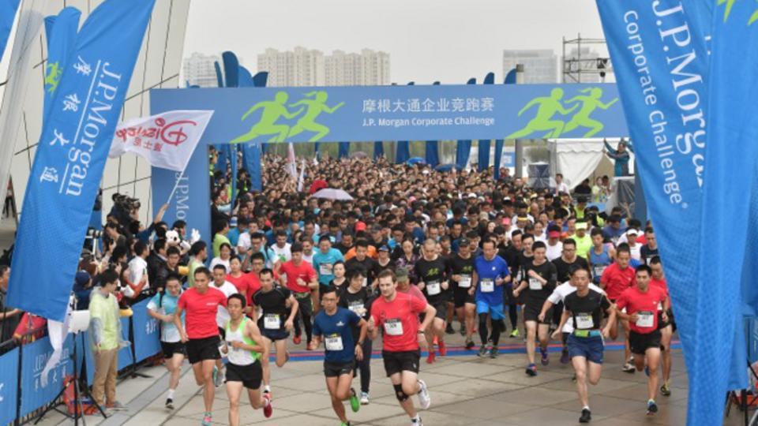
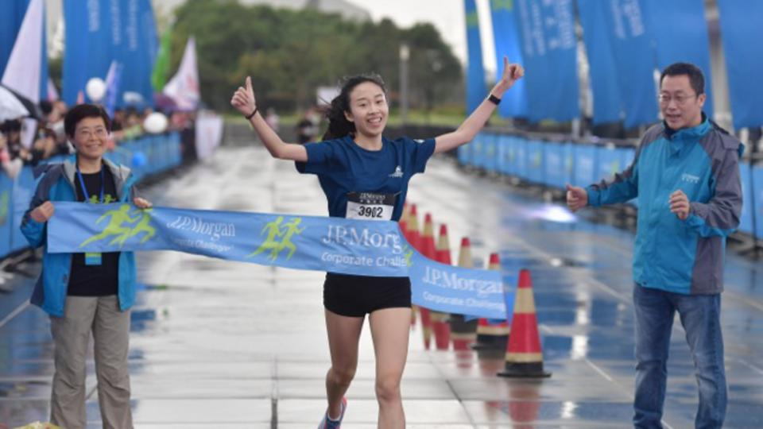
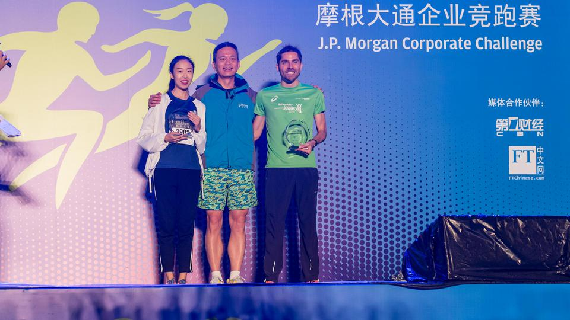

第六届摩根大通企业竞跑赛今日开赛
来自140家企业的员工参加比赛

2016年10月20日，上海——第六届摩根大通企业竞跑赛上海站的比赛今天下午于上海东方体育中心成功举行，来自140家企业的员工暂时放下手头繁忙的工作，与同事及业界同仁一起参加了这场赛程为5.6公里的年度赛事。赛事于今天下午四点正式开始,共计吸引了来自上海商界的数千名选手参与其中,共享增进友谊、提升健康的午后及晚间时光。
摩根大通中国区主席兼首席执行官李一表示：“我很高兴看到摩根大通企业竞跑赛已经发展成为上海企业界的重大活动之一。这也体现了我们面向企业界提倡并推广健康竞争、职场友谊以及团队合作精神的承诺。能够吸引到来自各行各业的商界同仁相聚在此，借助摩根大通企业竞跑赛的平台共同践行运动健康的职场风尚，我们感到非常开心。”
本届摩根大通企业竞跑赛上海站的比赛在上海东方体育中心鸣锣开赛。上海东方体育中心被称为“海上王冠”，赛程道路开阔平坦，沿途风景优美，为参赛者带来了愉悦的竞跑体验。赛后，所有的参赛者都会来到位于赛事终点的“赛后联谊村”( post-race village），在轻松的氛围中与同伴联谊言欢，实现企业与企业之间、员工与员工之间更方便顺畅的沟通交流。
回馈社会一直是摩根大通所秉持的企业文化之一。每一届摩根大通企业竞跑赛上，摩根大通都会代表各位参赛者向当地的公益机构或慈善组织进行捐赠。今年摩根大通企业竞跑赛上海站的慈善捐赠受益机构仍然是爱佑慈善基金会, 爱佑的使命是“让公益成为每个人的生活方式”。爱佑慈善基金会已经连续三年成为摩根大通企业竞跑赛上海站的受益机构。
爱佑慈善基金会副秘书长蒋昭华表示：“非常感谢摩根大通的慈善捐赠。今年，摩根大通捐赠的善款将全部用于‘爱佑新生’——病患孤儿医疗养护项目，帮助更多的病患孤儿获得新生，拥有美好未来。”
2012年上海站创出的最佳男女比赛纪录再次经受住了时间的考验，来自施耐德电气的Mathieu Leboulanger（33岁）今年以19分04秒的成绩第三年蝉联冠军，“由于两个月前受伤，起跑时我故意放慢速度，因此没有把握是否能够胜出。和前两届轻松夺冠相比，今年的冠军更加来之不易，也因此 更加值得骄傲和自豪。”

伴随着同事们的欢呼，来自上海迪士尼度假区的跑步爱好者蒋盈莉（23岁）以22分20秒的成绩获得女子冠军。蒋盈莉说：“特别感谢摩根大通主办的企业竞跑赛，这项赛事鼓励并提倡公平竞争、健康的生活方式以及利用慈善回馈社会。我非常喜欢跑步，对于进入前三名很有信心，能够最终夺冠，我感到非常开心。”
摩根大通企业竞跑系列赛已发展为跨五大洲、七个国家、13个城市的全球赛事。摩根大通企业竞跑赛上海赛事是该系列赛在亚太区所设的三大赛事之一。自开赛至今，摩根大通企业竞跑赛系列赛已连续举办了40届，并成为全球最大的公司竞技赛事。2016年摩根大通企业竞跑赛共计吸引了来自超过7,500家公司的250,000多名选手参赛，并将于11月9日迎来悉尼赛事。悉尼赛事也将是2016年摩根大通企业竞跑赛系列赛事的最后一站。
